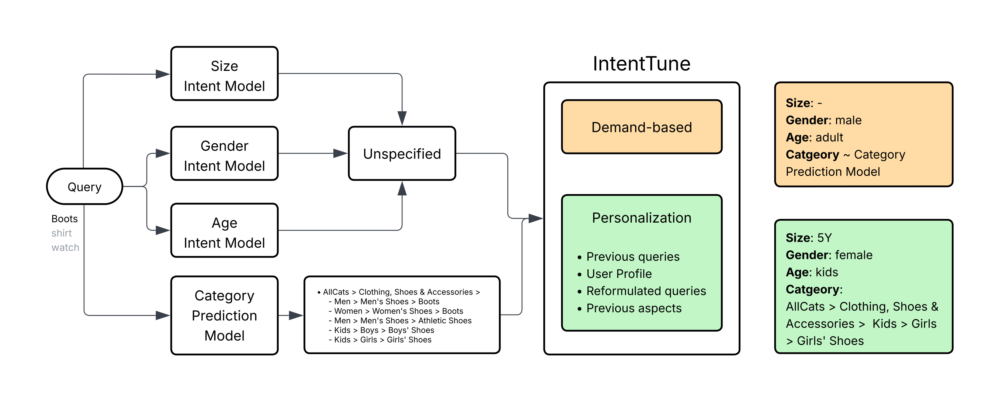
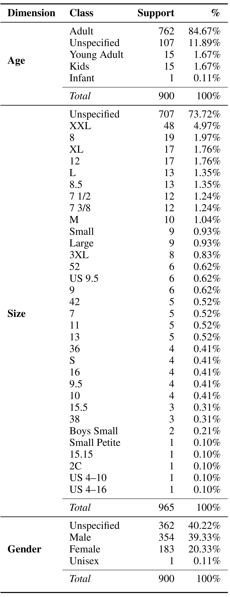
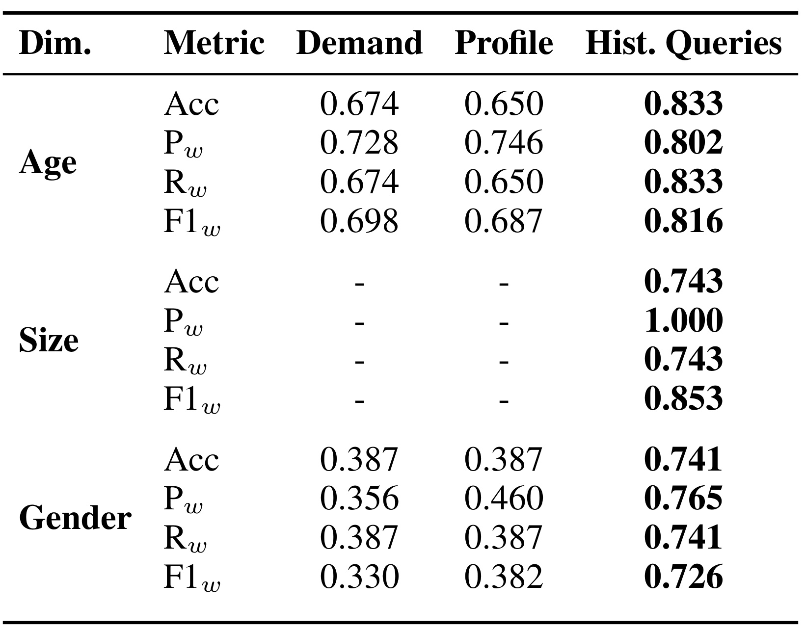
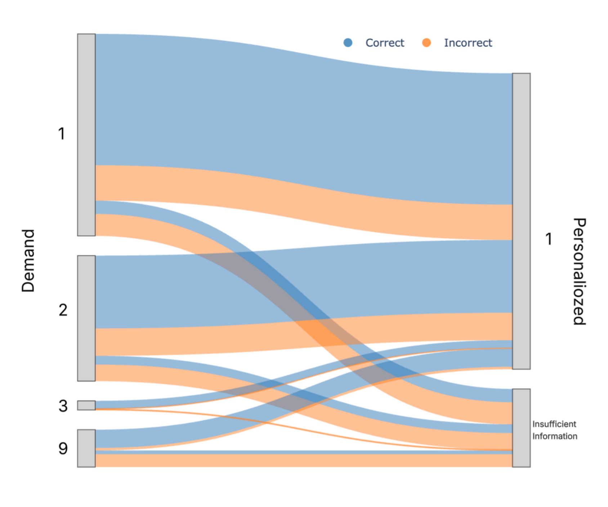

eBay-IntentTune 精读笔记
这篇论文来自 eBay Inc.，研究的是电商搜索 Query Understanding 里一个很具体但高频的问题：用户输入的短查询没有写全性别、年龄、尺码、细分类目等属性时，系统怎样在召回之前把 latent intent 补出来。论文入口为 arXiv:2607.01530。本轮未在 arXiv 摘要页或论文首页核验到独立代码仓库；论文主要依赖 eBay 内部时尚搜索日志、人工标注集和内部托管 LLM，因此复现应按方法框架和评估口径理解，而不是期待开箱公开数据。
真实电商搜索里，大量短查询没有写出性别、年龄、尺码、风格等关键属性；如果 Query Understanding 只能把它们标成 unknown 或 unspecified，这个不确定性会继续传导到召回和排序，导致用户真实意图被粗粒度候选集淹没。论文要解决的核心矛盾是：同一个“boots”“watch”“shirt”，对不同用户可能意味着完全不同的商品集合，但静态 query 文本本身不足以暴露这些差异。
1. 背景和问题
电商搜索的入口通常很短，尤其在服饰、鞋靴、配饰这类场景里，用户不一定会把完整属性写成自然语言描述。一个人搜索“boots”，可能想找女士踝靴，也可能在给儿童买鞋；搜索“shirt”时，用户可能关心男装、女装、童装、尺码、款式或品牌。传统搜索链路里，Query Understanding 模型会先尝试抽取或分类这些意图维度，然后召回与排序再使用这些意图过滤、扩展或重排候选商品。问题是，当查询只有一个或两个词时，模型无法凭 query 文本判断缺失属性，只能输出 unknown、unspecified 或非常粗的类目候选。论文把这个环节放在召回之前讨论，是因为一旦前置意图错误或过粗，后续 embedding retrieval、lexical retrieval 和 ranking 很难再完全修复候选池偏差。
从相关工作角度看，论文不是在重新发明 query intent classification。作者承认现有 Query Understanding 已经覆盖品类分类、属性抽取、query segmentation、query reformulation 等任务，也承认个性化搜索和推荐系统长期使用用户 profile、兴趣、点击和购买历史。但这些方向大多作用在不同位置：Query Understanding 往往只读 query 本身，个性化搜索多在召回后或排序阶段调整结果。IntentTune 试图把两条线接起来，让个性化不是只改变最终排序，而是直接进入低层意图推断：用户历史查询、账号 profile、历史交互或全站 demand 分布，应当成为“这个短 query 到底缺了什么属性”的条件。
这篇论文的具体业务背景是 eBay 的 fashion-related search。这里的困难不是“没有模型”，而是模型之间存在职责断点。size intent model 可以用 BERT token classifier 识别 query 里显式出现的 clothing_size、shoe_size 或 size_type，但 query 不写尺码时它没有依据；gender 和 age intent model 可以把 query 分类为 male、female、unisex、infant、kids、adult 等类别，但短词常常没有足够文本证据；category prediction model 可以基于历史搜索数据给出类目候选，却仍可能把“boots”落在男鞋、女鞋、童鞋多个候选之间。论文强调所有 baseline intent models 本身已有较高 macro-F 和 micro-F，超过 0.9；也就是说问题不在单个已知类别识别能力差，而在开放场景里存在大量文本不足以判定的输入。
这也是推荐和搜索系统里常见的“召回前个性化”问题。排序阶段可以根据用户偏好调分，但如果 query understanding 早已把候选限制到不合适的性别、年龄或类目，排序能看到的商品集合就被污染了。相反，如果在 query 进入召回前就把“boots”转成“kids girls shoes boots”或把“shirt”转成更具体的男装 T-shirt 意图，后续 inverted index、semantic retrieval、category retrieval 的候选空间会更接近用户真实需求。IntentTune 的价值在于把 personalization 变成 intent completion 的条件，而不只是结果列表的重排信号。
论文还把 population-level demand 和 user-specific behavior 放在同一个框架里比较，这一点比只说“加用户画像”更实用。全站 demand 可以回答“多数用户搜这个 query 时最终落在哪些类目”，它适合冷启动或弱个性化场景；用户历史查询则能回答“这个具体用户最近一个月在找什么”，它更接近短期购物任务。静态 profile 例如宽泛年龄段、性别，也能提供背景，但论文的实验显示它并不一定比 demand 更强，尤其当 profile 粗、旧或与当前购物任务无关时。对工业搜索系统而言，这意味着个性化信号不是越多越好，而是要区分静态身份、动态任务、全站流行趋势三类信号的可靠性。
2. 方法
2.1 基线意图模型：先识别哪些维度无法从 query 文本里判断
论文的方法从现有 QU pipeline 开始，而不是直接让 LLM 接管所有判断。给定一个用户 query，系统先运行四类 baseline intent models：size intent、gender intent、age intent 和 category prediction。前三类模型负责属性维度，category prediction 负责把 query 映射到商品 taxonomy 中合适的类目。关键不是 baseline 输出一个最终答案，而是它会暴露哪些维度已经明确、哪些维度仍然 unspecified。IntentTune 的入口条件就是一个或多个 baseline 模型返回 unspecified，或者 category prediction 给出的类目仍然不够细、不够个性化。
这里有一个重要工程含义：IntentTune 不是把所有 query 都交给更贵的个性化推理，而是只处理那些现有模型已经表明“信息不足”的 query。size model 是 BERT-based token classification，只擅长 query 中显式出现的 size entity；gender 和 age model 是 BERT-based classification，输出 male、female、unisex、unspecified 或年龄段类别；category prediction model 则是 BERT-based category mapper，训练时使用历史搜索数据以贴近 population preferences。这个设计让系统保留原有低延迟模型的强项，同时给“短 query 的隐藏属性”开一条补全路径。

Figure 1 把这条路径讲得很清楚。左侧的 query 例子是 “Boots / shirt / watch”，它们先经过 size、gender、age 与 category prediction 四个模型；中间的 Unspecified 节点表示某些属性模型无法从文本中做出明确判断。右侧的 IntentTune 被分成 demand-based 和 personalization 两条路线：demand-based 依赖全站类目预测，personalization 则引入 previous queries、user profile、reformulated queries、previous aspects 等用户级上下文。输出示例也揭示了两条路线的差别：demand-based 可能得到 male、adult 以及接近 category prediction model 的类目，而 personalization 可以把同一个 boots query 解释成 size 5Y、female、kids，并进一步细化到 Kids > Girls > Girls' Shoes。对搜索链路来说，图里的箭头不是装饰，而是说明了信息流顺序：先由已有模型发现“不知道”，再由 demand 或用户上下文补出缺失属性，最后把更完整的 intent representation 交给后续召回与排序。
2.2 Demand 路线：用品类层级近似补全性别和年龄
Demand-based intent resolution 利用的是 category prediction model 的输出。作者给的例子是“dell shirt”：如果 category model 把它预测到 AllCats > Clothing, Shoes, & Accessories > Men > Men's Clothing > Shirts > T-Shirts，系统就可以从最高置信类目中推断 gender=male、age=adult。这个做法本质上是从 population-level category demand 反推属性。它适合那些类目层级本身强烈暗示性别或年龄的 query，例如男装、童鞋、婴儿用品；也适合作为没有足够用户历史时的 baseline。
但论文对 demand 路线的边界说得很明确。首先，它只取 top-ranked category prediction，因此如果 category model 产生的是多个相近候选，demand 路线没有充分利用候选集合里的不确定性。其次，它不用于 size inference，因为类目层级通常不能可靠推出具体尺码，强行用 demand 约束尺码还可能损害 recall。这里的风险是把“多数人的类目偏好”误当成“当前用户的属性偏好”，在强个性化商品上尤其容易错。因此 demand 在 IntentTune 中更像一个可用但保守的补全器，而不是最终答案来源。
2.3 Personalization 路线：把用户历史查询变成意图先验
Personalization component 使用两类上下文：非敏感 user profile attributes，例如宽泛年龄段和性别；以及用户过去一个月内的 historical queries。作者没有把所有历史都无脑塞给 LLM，而是筛选那些 baseline intent models 本身高置信的历史查询：gender intent confidence 大于 0.8，或 non-unspecified age intent confidence 大于 0.9。这个筛选很关键，因为历史查询如果本身也是模糊的，直接拿来做上下文会把噪声传给当前 query；而高置信历史可以作为用户近期购物任务的弱标签。
推理时，论文使用 internally hosted LLM。prompt 包含 intent classes 的定义、当前 ambiguous query，以及相关用户上下文。对 category 任务，还会把 category prediction model 产生的候选类目列表给 LLM，让它在候选中选择，而不是自由生成一个 taxonomy 之外的类目。Personalization 的核心机制是把 LLM 的角色限制为“基于上下文做离散意图选择”，而不是开放式生成商品解释。这让它更容易接入现有 search stack：输入是 query、候选类目、历史查询与 profile；输出是 size、gender、age、final category 等结构化 intent assignments。
本文没有可复用的核心公式。依据是论文方法章节描述的是 production pipeline、prompt 输入、阈值筛选和评估口径，没有提出新的损失函数、打分函数、优化目标或可迁移的排序公式。方法上最接近“规则”的部分，是历史上下文筛选阈值与候选类目约束：只有高置信历史查询进入 prompt，category personalization 只在预测候选集合内做选择。这个约束比公式更重要，因为它决定 LLM 能否在工业 taxonomy 中稳定输出可消费的标签，而不是生成无法落库的自然语言。
IntentTune Outputs 则把以上两条路线落到系统输出上：一组 demand-based 或 personalized intent assignments，包括 refined size、gender、age group 和 final category。作者在 Figure 1 中用“浏览 girls' footwear 的用户搜索 boots”说明个性化输出如何把 query 变成完整属性组合。对工程实现来说，这一步应当是召回前的结构化中间层：如果输出置信度足够高，可以改变 category retrieval、attribute filter 或 query rewrite；如果上下文冲突或置信度不足，则应保留候选集合而不是硬过滤。论文没有展开在线策略，但从方法边界可以看出，IntentTune 更适合做 query understanding augmentation，而不是替代所有 retrieval/ranking 逻辑。
3. 实验结果
3.1 数据集与标注口径
论文没有使用公开个性化搜索数据集，原因是已有数据要么面向更宽泛的 web personalization，要么是电商 assistant/conversational setting，要么 query 是从商品合成出来的，不符合“真实用户短 query + 历史搜索行为”的目标场景。作者从 eBay 内部 fashion related search queries 中先找出 size、age、gender intent 都可能 unspecified 的 query，采样 30 个 ambiguous queries；再采样 30 个搜索活动足够丰富的用户，要求这些用户在一个 session 中至少看过 20 个 search result pages，并且六个月内参与过不止一个 search session。两者笛卡尔积形成 30 x 30 = 900 个 user-query pairs。
标注过程使用的上下文比模型实验更宽：人工标注员可以参考 user profile、historical queries，也可以参考用户在 session 中选择过的 size、gender、category 等 aspect filters。目标是给每个 user-query pair 标一个 gender、age 和 category；size 允许多标签，因为同一用户对同一 query 可能有多个合理尺码解释。这个标注设定很贴近真实系统：它承认有些意图即使给了上下文也无法判断，因此标签里仍然保留 unspecified。

Table 1 的价值在于提醒读者不要只看平均指标。Age 维度里 Adult 占 84.67%，Unspecified 占 11.89%，Kids 和 Young Adult 各 1.67%，Infant 只有 0.11%；Gender 里 Unspecified 仍有 40.22%，Male 39.33%，Female 20.33%，Unisex 0.11%；Size 更极端，Unspecified 达到 73.72%，其余尺码类别高度长尾，且由于 size 允许多标签，总 support 是 965 而不是 900。这样的分布说明两个问题：第一，模型必须处理强类别不平衡，所以论文使用 weighted precision、weighted recall 和 weighted F1；第二，所谓“补全意图”不是简单分类题，尤其 size 维度，即便有用户上下文，很多 pair 仍然没有足够信息。这也让后面的历史查询优势更有说服力，因为它不是在一个均衡、干净、公开 benchmark 上刷分，而是在长尾与 unspecified 都很重的业务标注集上做比较。
3.2 主结果：历史查询强于 demand 与静态 profile
Evaluation 里，作者对 size、age、gender 报告 accuracy、weighted precision、weighted recall 和 weighted F1。size 的评价只覆盖 historical-query-based personalization，因为 demand 和 profile 都没有可靠 size 信号；并且只要模型命中一个可接受 size label，就算该 user-query pair 的 size 意图被恢复。category prediction 的评价也有特殊口径：作者不直接评估 demand-based component，因为它使用同一个 category prediction model；真正关心的是 personalization 是否能在保持正确的前提下减少候选类目数量。

Table 2 是主结果。Age 维度上，demand 的 accuracy 是 0.674，weighted F1 是 0.698；profile 的 accuracy 是 0.650，weighted F1 是 0.687；historical queries 达到 accuracy 0.833、weighted F1 0.816。也就是说，历史查询不仅超过静态 profile，还明显超过 population demand。Gender 维度更突出：demand 和 profile 的 accuracy 都是 0.387，weighted F1 分别是 0.330 和 0.382；historical queries 的 accuracy 到 0.741，weighted F1 到 0.726，几乎把 accuracy 翻倍。Size 维度只有 historical queries 被评估，accuracy 0.743、weighted precision 1.000、weighted recall 0.743、weighted F1 0.853，说明在显式 size 缺失时，用户过去的 query 仍能提供相当强的尺码线索。
这些数字背后的结论不是“LLM 比分类器强”，因为论文并没有拿开放 LLM 直接替换 baseline intent models。更准确的读法是：动态用户行为比静态用户属性和全站需求分布更适合补全短 query 的隐藏意图。Profile 粗粒度、更新慢，也可能描述账号主人而不是当前购物对象；demand 描述的是市场总体倾向，不关心当前用户最近是否在给孩子买鞋。历史查询则更接近 session-level 或近期任务状态，它既能隐含性别年龄，也能暴露品类路径和尺码偏好。当然，这种优势依赖历史查询质量：论文使用一月窗口和高置信阈值，正是在避免把低质量历史当作个性化证据。
作者还报告了覆盖率性质的结果：demand-based module 对 ambiguous queries 的 age 和 gender 可预测比例分别为 77.3% 和 76.56%；historical-query personalization 对 age 和 gender 的可预测比例是 90.22% 和 75.44%，profile-based 则分别是 73.44% 和 86.44%。这组数说明 coverage 与 final accuracy 不是同一件事。Profile 在 gender 上可能更容易给出预测，但 Table 2 显示它不一定正确；historical queries 在 age 上既有更高预测覆盖，也有更好 weighted F1。工业系统落地时不能只统计“多少 query 被补全”，还要看补全是否真的改善人工标注一致性，尤其不能为了降低 unspecified 占比而制造错误过滤。
3.3 类别细化：从候选集合压缩到单一品类
除了 gender、age、size，论文还评估了 personalization 对 category prediction 的细化作用。Demand-based category model 会给 ambiguous query 生成多个候选类目；personalization 的任务不是重做整个 category classifier，而是在候选集中利用用户历史把结果压缩到更具体、更符合用户的单一类目。作者选择前面评估中表现更好的 personalization 路线，并统计它在保持正确性的前提下减少候选数量的比例。

Figure 2 用类似 Sankey 的流图表示 demand 候选数量到 personalized 输出的变化。左侧 Demand 有 1、2、3、9 个候选的不同起点，右侧 Personalized 主要流向单一候选，也有 Insufficient Information。蓝色表示细化后正确，橙色表示细化后错误。论文文字给出关键数值：historical-query personalization 能把 68.5% 的 demand candidate categories 正确减少到 single category；同时有 10% 被标记为需要 further review，因为 category model 的候选集合可能不完整或错误，导致 personalization 没法在候选内给出可靠答案。这个结果和 Table 2 互补：Table 2 证明历史查询能补全属性维度，Figure 2 证明同一信号也能帮助类目候选压缩。
对搜索链路来说，Figure 2 也暴露了一个边界条件：当 demand 候选本身缺了正确类目时，personalization 如果被限制在候选集合内，就只能输出错误或 Insufficient Information。这个约束一方面提高 taxonomy 合法性，另一方面也把上游 category prediction 的 recall 变成瓶颈。更稳妥的系统可能需要两阶段策略：先让 category prediction 提供足够宽的候选集合，再让 personalization 缩窄；如果 personalized evidence 与候选集合冲突，应触发候选扩展或人工/离线 review，而不是直接信任任一方。
3.4 结果可信度与未覆盖问题
总体看，论文的结果支持一个清晰但有限的主张：在 eBay 内部 fashion search 的小规模人工标注集上，历史查询是解析 under-specified query intent 的强信号，明显强于 population demand 和 static profile。它没有声称达到 state-of-the-art，也没有给出线上 CTR、conversion、GMV 或用户满意度提升。Discussion 里作者明确说这是一项 proof of concept，后续需要用 online e-commerce metrics 评估，例如 user satisfaction、click-through rate 和 engagement。
实验的主要限制来自三方面。第一，数据规模小且私有，30 个 query 与 30 个用户的组合足够做概念验证，但不一定覆盖时尚搜索的长尾品牌、跨语言 query、季节性、赠礼场景或多用户共用账号。第二，人工标注可以看到 richer context，包括 selected aspects，而模型主要使用 profile 和 historical queries；这会让模型与标注员的信息面不完全一致。第三，内部托管 LLM 的 prompt、模型版本、延迟和成本都没有公开，论文也没有报告在线系统成本，因此工程团队若要复现，需要重新评估隐私、延迟、调用成本和安全过滤。
不过这些限制并不抵消论文的核心启发。它真正有价值的地方是把“unknown intent”从错误标签变成可路由状态：当 baseline QU 说不知道时，系统可以根据 demand、profile、history 选择不同补全策略；当上下文冲突或冷启动时，系统可以保留 unspecified 或扩大候选，而不是假装已经确定。这个思路对推荐系统的召回前处理、搜索 query rewrite、广告意图归因、个性化 taxonomy routing 都有可迁移性。
4. 总结
4.1 我的判断
IntentTune 最值得关注的点，是把个性化从排序阶段前移到 query understanding 阶段。推荐系统常把用户兴趣用于 rerank，但这篇论文说明，如果 query 本身短而模糊，召回前的意图补全更可能决定候选池质量。对工业搜索而言，历史查询信号的收益也符合直觉：购物任务往往有短期连续性，用户最近搜过“girls shoes”“kids sneaker size 5Y”，再搜“boots”时就很可能仍在同一任务里。这篇论文的核心贡献不是复杂模型结构，而是把 unspecified query 显式接入 demand 与 user behavior 两类上下文，让低层 intent inference 变成可个性化、可降级的系统组件。
4.2 工程启发与复现建议
如果要在自己的搜索或推荐链路中复现，第一步不是直接接 LLM，而是先建立 baseline intent models 的 unknown/unspecified 监控：哪些 query、哪些品类、哪些用户段最常触发 unspecified；这些 query 进入召回后是否造成候选过宽、类目漂移或转化下降。第二步是建立高置信历史上下文池，只把近期、明确、与当前 taxonomy 对齐的历史 query 或 aspect 作为 prompt 输入，避免把噪声行为写进个性化标签。第三步是把输出做成结构化 intent assignments，并保留置信度、来源和降级原因；不要让生成式模型自由改写 query 或生成 taxonomy 外类目。
4.3 局限与后续跟进
局限至少有四个。第一，cold start 用户、低活跃用户和探索型 query 缺乏足够历史，IntentTune 只能退回 demand 或保持 unspecified。第二，多源信号可能冲突，例如 profile 显示 adult，历史查询指向 children's items，selected aspects 又指向另一类商品，系统需要冲突消解而不是简单投票。第三，私有数据和内部 LLM 让论文结论很难被外部完全复验，尤其是成本、延迟和隐私约束没有量化。第四，线下 F1 或候选压缩不等于线上收益，过强的个性化过滤可能伤害探索、多意图购物或礼品购买场景。
后续我会重点跟三件事。其一，看作者或 eBay 是否公开更详细的 prompt、候选类目约束和线上 A/B 结果，因为这决定它能否从 proof of concept 进入生产策略。其二，关注是否有方法把 demand candidates 和 personalization evidence 联合建模，而不是先生成候选再在候选内选择；这能缓解 Figure 2 中候选集合缺正确答案的问题。其三，关注隐私与可解释性设计：如果系统用用户历史推断性别、年龄、尺码等敏感或准敏感属性，产品侧必须给出可审计的来源、过期策略和关闭机制，否则个性化 query understanding 可能带来用户感知风险。
更具体地说，这篇论文适合被当成“意图补全层”的设计样板，而不是直接照搬为一个 LLM 功能。上线前应该先定义哪些属性允许被自动补全、哪些属性只能用于软排序、哪些属性必须保持 unknown；还要记录每次补全来自 demand、profile 还是 historical queries。只有把来源、置信度和降级原因都写进日志，后续才能解释一次召回变化究竟来自 query 文本、用户历史，还是上游类目候选本身的变化。